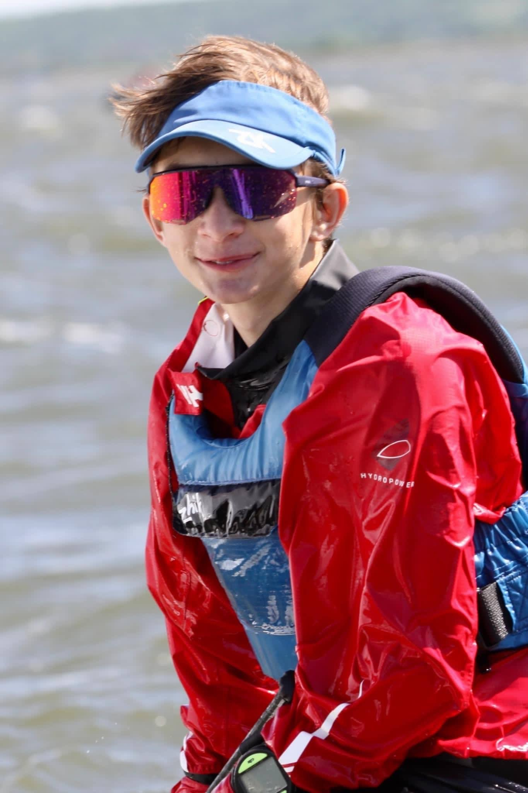

Na Optimistu jsem se poprvé svezl v roce 2016 na Orlické přehradě u Zdenála Sünderhaufa. V 10 letech jsem nastoupil do Českého Yacht Klubu a v roce 2017 jsem odjel 4 závody. Můj dosavadní největší úspěch je 3. místo na Mistrovství České republiky v kategorii starší žáci, 6. místo v celkovém pořadí. Mým nejlepším zahraničním výsledkem je 32. místo ze 437 na Lago di Garda. Na jachtingu mě nejvíce baví parta kamarádů a strategie při závodech. Jsem pečlivý kamarádský a k mým dalším koníčkům patři četba a turistika.